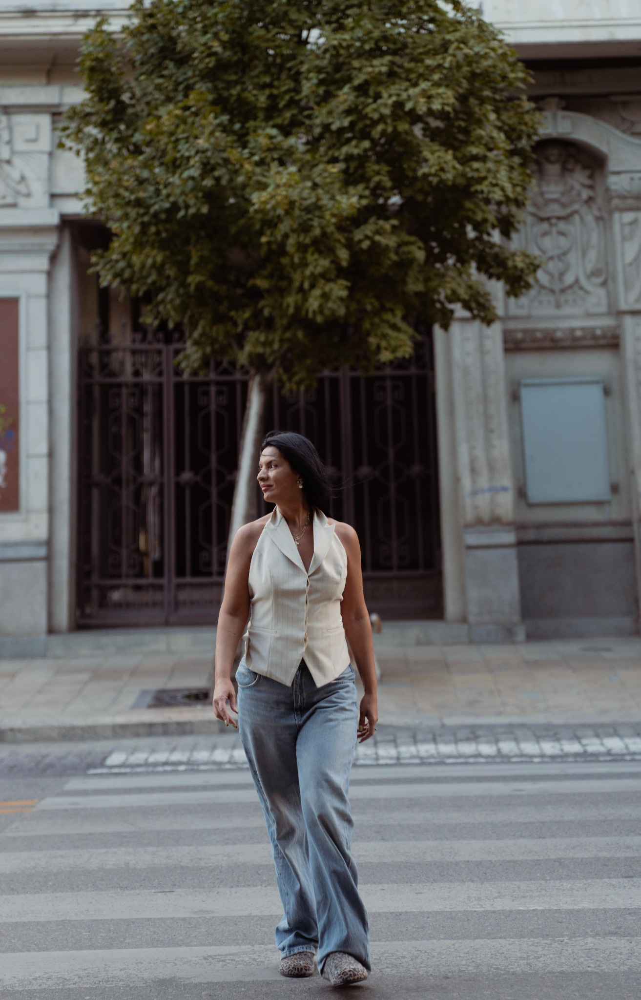
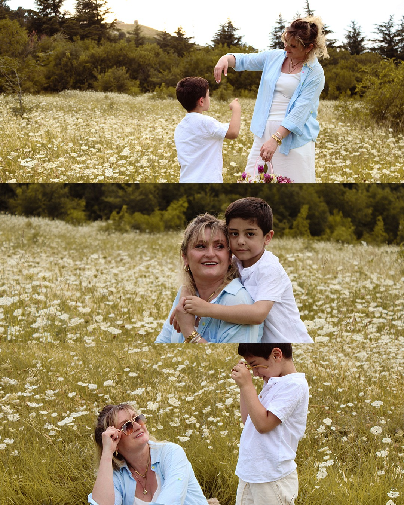
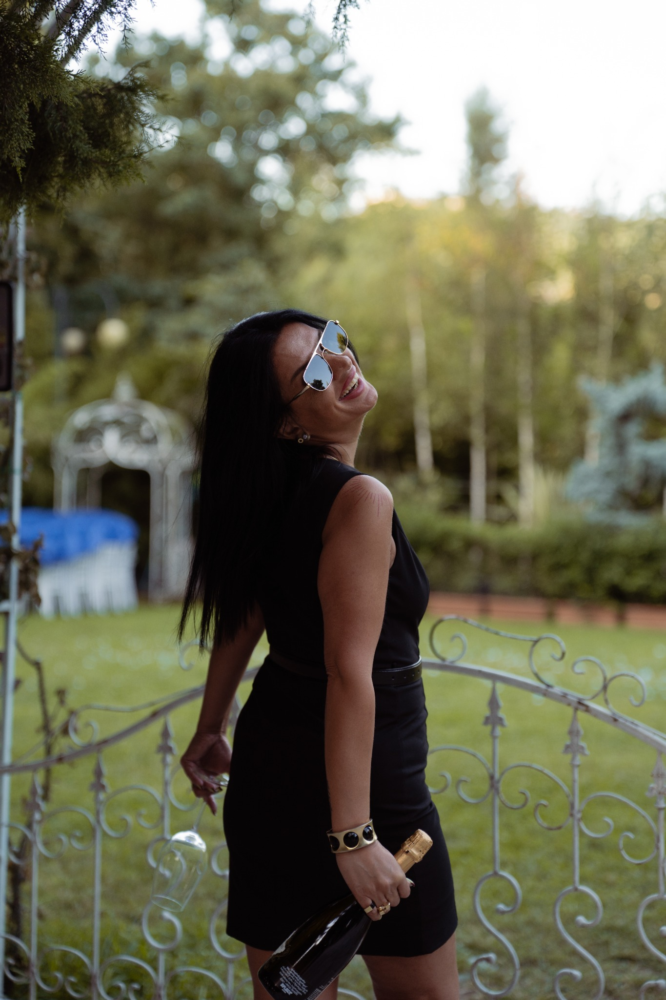
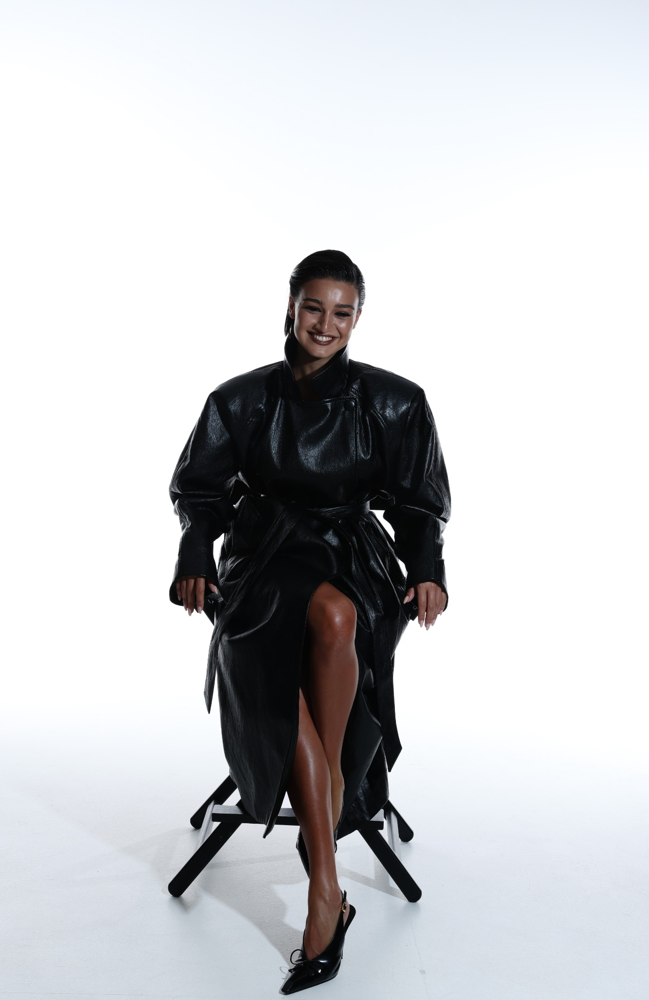
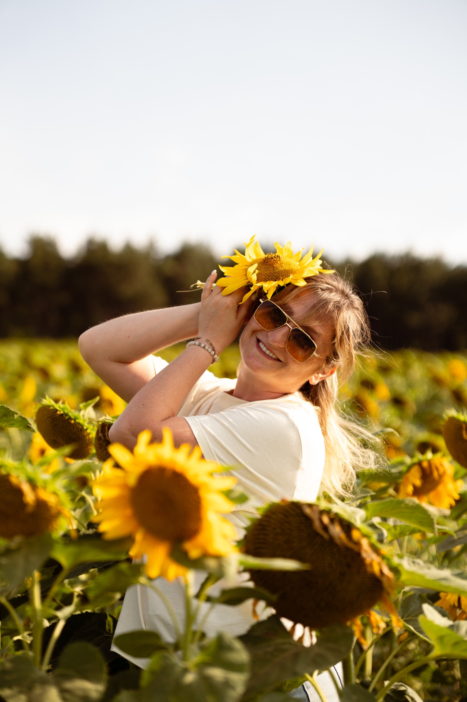
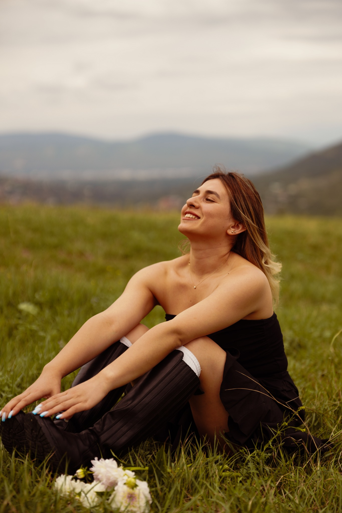
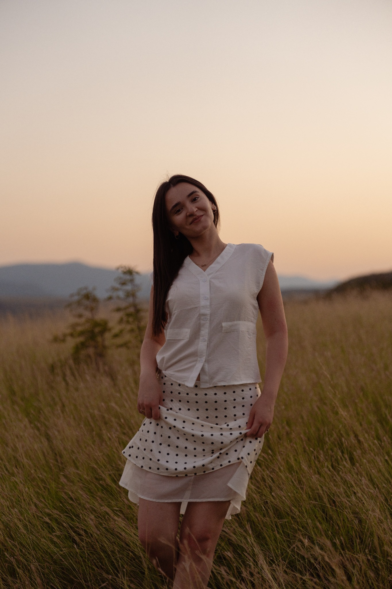
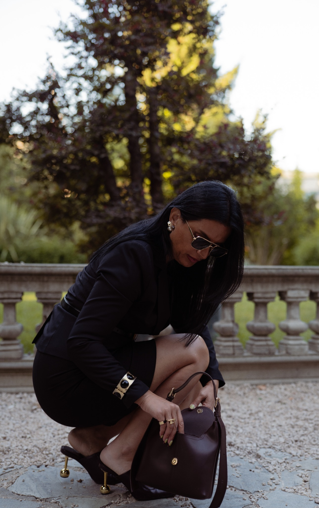
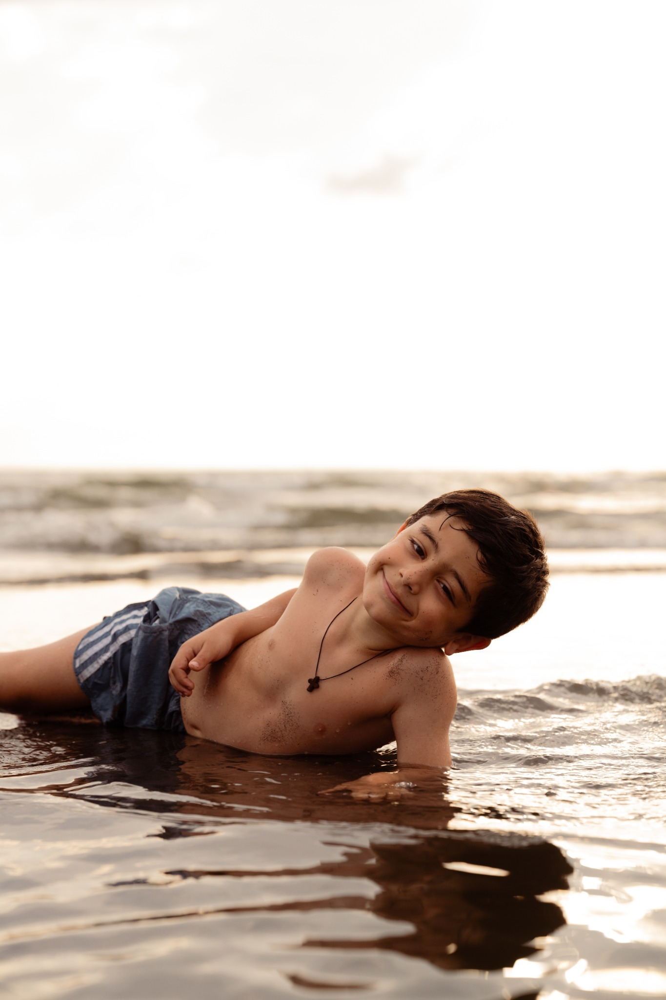

Selected work
პორტფოლიო
პორტრეტები, წყვილები, ოჯახური ისტორიები და ნათლობა — ჩემი ხედვით, თბილი ფერებითა და ბუნებრივ ემოციებზე აქცენტით.














თქვენი კადრები
გინდა, შემდეგი შენ იყო?
მომწერე — ერთად შევარჩიოთ ადგილი, განწყობა და შენთვის სასურველი თარიღი.